✨ Apie kelionę
Keturių dienų kultūrinė kelionė į Kopenhagą — kanalai, pilys, muziejai ir geras maistas. Skrendame iš Kauno 2026-10-23 ryte (atvykimas 09:40) ir grįžtame 2026-10-26 po pietų (skrydis 15:15). Visą kelionę nakvojame viename bute Christianshavn rajone, prie kanalų, 3 minutės pėsčiomis nuo metro stotelės.
Maršrutas: 1 diena — atvykimas ir Christianshavn su Nyhavn; 2 diena — pilys ir muziejai senamiestyje; 3 diena — Christiania, Tivoli sodai ir vakare Deep Purple koncertas Royal Arenoje; 4 diena — paskutinis pasivaikščiojimas ir skrydis namo. Automobilis nenuomojamas — judame metro, traukiniais ir pėsčiomis.
🏠 Nakvynė
Sanders Saint-Nice 1-Bdr Apt by the Canals
Adresas: Christianshavn, Kopenhaga (prie kanalų, 3 min pėsčiomis nuo Christianshavn metro stotelės)
Jaukus butas su virtuvėle (indaplovė, orkaitė) tiesiai Christianshavn rajone — 1 minutė nuo Vor Frelsers Kirke bokšto, apie 15 minučių pėsčiomis nuo Nyhavn ir senamiesčio. Puikus pasirinkimas be automobilio: tiesioginis metro ryšys su oro uostu ir senamiesčiu.
Butas skelbiamas kaip vienas miegamasis — keliaujant 4 žmonėms verta iš anksto patvirtinti miegamųjų vietų skaičių.
📍 Google MapsTripadvisor Expedia
🔎 Booking.com: 2026-10-23–2026-10-26, 4 žm.
🍽 Netoliese pavalgyti
- Ravelinen — restoranas · 110 m · ~1 min pėsčiomis — 📍 Google Maps
- Havnens BBQ — greitas maistas (kebab, sumuštiniai) · 190 m · ~3 min pėsčiomis — 📍 Google Maps
- Kafe Falken — baras · 240 m · ~3 min pėsčiomis — 📍 Google Maps
- Restaurant Lille Mølle — restoranas · 250 m · ~3 min pėsčiomis — 📍 Google Maps
- Amagerport Vinstue — greitas maistas · 270 m · ~4 min pėsčiomis — 📍 Google Maps
- Cafe Wilder — kavinė · 80 m · ~1 min pėsčiomis — 📍 Google Maps
- Les Amis — kavinė · 80 m · ~1 min pėsčiomis — 📍 Google Maps
- Sushi Saiko — suši · 90 m · ~1 min pėsčiomis — 📍 Google Maps
- Tinos Pizzeria — picerija · 100 m · ~1 min pėsčiomis — 📍 Google Maps
- Sankt Annæ 8 — regioninė kuchnia · 110 m · ~1 min pėsčiomis — 📍 Google Maps
🛒 Parduotuvės
- Netto — prekybos centras · 280 m · ~4 min pėsčiomis — 📍 Google Maps
- Wislapolska — parduotuvė · 310 m · ~4 min pėsčiomis — 📍 Google Maps
- Den Polske Købmand — mini market · 320 m · ~4 min pėsčiomis — 📍 Google Maps
- Købmandskælderen — mini market · 70 m · ~1 min pėsčiomis — 📍 Google Maps
- Bladudsalg — mini market · 90 m · ~1 min pėsčiomis — 📍 Google Maps
Atsarginiai variantai, jei rezervaciją reikėtų keisti: Central Canal Apartments (Christianshavn) ir CABINN Apartments (greta metro, su pusryčių galimybe) — abu tame pačiame rajone.
📅 1 diena, 2026-10-23 — Atvykimas ir Christianshavn
☔ Prognozuojama dulksna visą dieną (82% tikimybė) — žr. Planą B žemiau, jei norėsite daugiau laiko leisti patalpose.
Kopenhagos oro uostas (CPH)
Atvykimo skrydis iš Kauno. Atsiėmę bagažą, metro stotelėje nusipirkite bilietus Rejsebillet programėlėje arba automate (fizinis Rejsekort pamažu nebenaudojamas).
 Nuotrauka: kallerna, CC BY-SA 4.0, šaltinis
Nuotrauka: kallerna, CC BY-SA 4.0, šaltinis
📍 Google Maps
Apartamentai Sanders Saint-Nice (Christianshavn)
Įsikurkite ir palikite bagažą – butas 3 min pėsčiomis nuo Christianshavn metro stotelės.
📍 Google MapsVor Frelsers Kirke (bokštas)
Garsieji išorės sukasi laiptai su vaizdu į Christianshavn. Bokštas kasdien 09:00–20:00 (gali uždaryti stiprų vėją/lietų – jei taip, apžiūrėkite tik bažnyčią). Bilietas į bokštą ~70 DKK. Dviračių takai (cykelsti) – niekada jais neikite pėsčiomis.
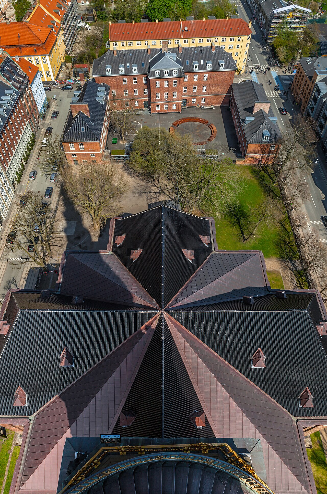
Nuotrauka: Moahim, CC BY-SA 4.0, šaltinis📍 Google Maps
Pietūs – Christianshavns Bådudlejning og Café
Jaukus kavinė tiesiai prie kanalo su valčių nuoma – gera vieta atsipūsti po bokšto lipimo. Veikia nuo 1905 m. Vidutinė kaina ~20 €/asm.
📍 Google MapsNyhavn (diena)
Spalvingas kanalo krantas su laivais – klasikinė Kopenhagos atvirutė. Nemokama.
 Nuotrauka: Dietmar Rabich, CC BY-SA 4.0, šaltinis
Nuotrauka: Dietmar Rabich, CC BY-SA 4.0, šaltinis
📍 Google Maps
Amalienborg (kiemas, sargybos namai)
Karališkoji rezidencija – sargybos keitimas vyksta apie vidurdienį, bet kiemas gražus bet kuriuo metu. Muziejų aplankysime kitą dieną.
Nuotrauka: Jebulon, CC0, šaltinis📍 Google Maps
Den Lille Havfrue (Mažoji jūrų nimfa)
Nedidelė, bet ikoniška skulptūra – trumpas vizitas užtenka. Popietė mažiau minios nei rytais, kai atvažiuoja turistų autobusai.
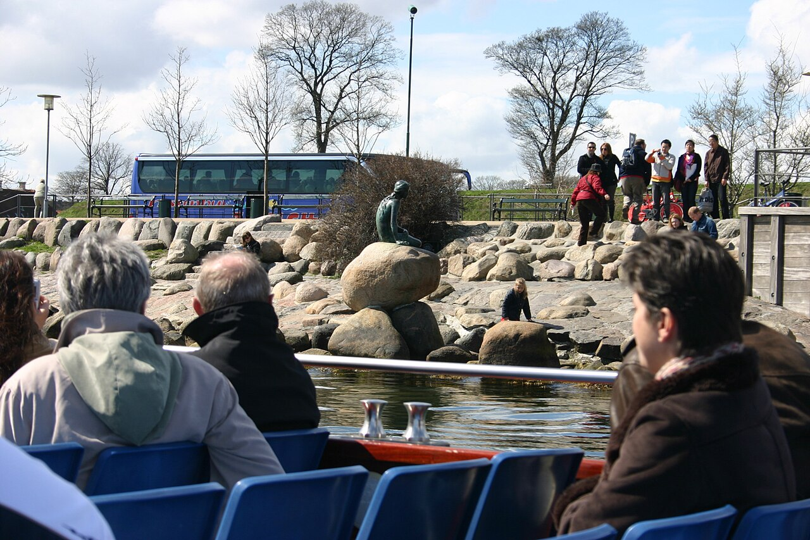
Nuotrauka: klndonnelly, CC BY 2.0, šaltinis📍 Google Maps
Nyhavn vakare ir vakarienė — Nyhavns Færgekro
Saulei nusileidus (~17:15) kanalas gražiausias apšviestas. Vakarienė tradicinėje danų taverne – rekomenduojamas silkių bufetas (10+ rūšių) ir krintanti žvaigždė (žuvies smørrebrodas). Vakarienė ~38 € asmeniui.
📍 Google Maps🌤 Oras: dulksna, 8,8–12,4 °C, vėjas iki ~25 km/val. — pasiimkite lietpaltį.
🌧 Planas B (jei blogas oras)
Kodėl: Vor Frelsers Kirke bokšto lipimas lauke, dienos pasivaikščiojimas Nyhavne, Amalienborg kiemo apžiūra ir Mažosios jūrų nimfos vizitas – visi lauke ir nemalonūs per dulksną su vėju.
Kopenhaga be lietaus – muziejai ir bažnyčios vietoje lauko pasivaikščiojimų
🚇 Viešuoju transportu 1 🚶 Pėsčiomis 🚇 Viešuoju transportu 2Vor Frelsers Kirke (bažnyčios vidus)
Dėl vėjo ir lietaus bokšto išoriniai laiptai gali būti uždaryti – apžiūrėkite įspūdingą bažnyčios vidų (altorius, vargonai).
📍 Google MapsDansk Arkitektur Center (BLOX)
Kopenhagos ir Danijos architektūros ekspozicijos prie uosto, visiškai viduje – prieglobstis nuo lietaus.
📍 Google MapsDesignmuseum Danmark
Danijos dizaino kolekcija – kėdės, stiklas, mada, visa viduje. Bilietas ~115 DKK.
📍 Google MapsMarmorkirken (Frederikskirke)
Įspūdinga marmurinė kupolinė bažnyčia prie Amalienborgo – vidus nemokamas.
📍 Google MapsVakarienė – Nyhavns Færgekro
Vakarienė su stogu virš galvos, kanalo vaizdas pro langą.
📍 Google MapsGrįžimas į apartamentus
Diena baigiasi toje pačioje vietoje, kaip ir pagrindiniame plane.
📍 Google MapsPatarimas: Designmuseum Danmark bilietus verta pirkti internetu iš anksto, kad nereikėtų laukti lietuje prie kasos.
📅 2 diena, 2026-10-24 — Pilys ir muziejai
☔ Prognozuojama dulksna (78% tikimybė) — šios dienos planas daugiausia patalpose, tad lietus netrukdys.
Rosenborg Slot
Kaip nuvykti: 🚇 Metro M1/M2: Christianshavn → Kongens Nytorv (~4 min), toliau 18 min pėsčiomis iki pilies (arba pasivaikščiokite po Kongens Have parką prieš atidarymą).
Karūnos brangenybės ir karališkoji istorija. Žiemos darbo laikas (spalis–kovas) 10:00–16:00. Bilietas ~140 DKK, nemokamai <18 m.
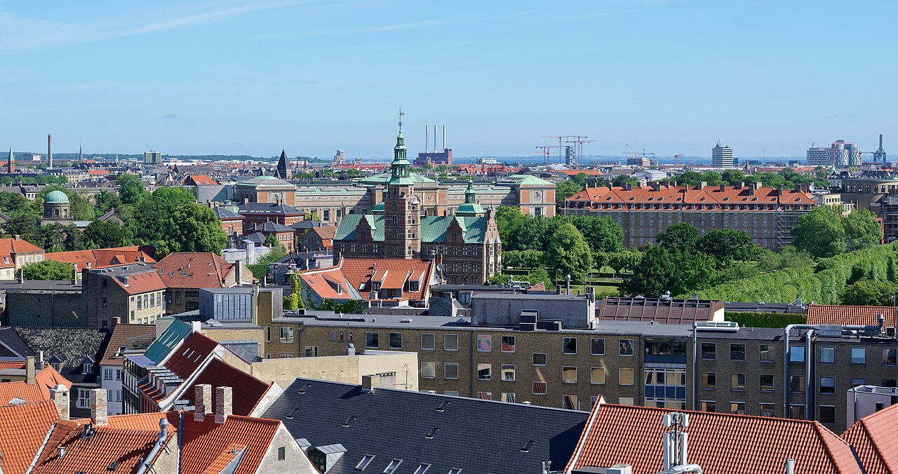
Nuotrauka: Jakub Hałun, CC BY-SA 4.0, šaltinis📍 Google Maps
SMK – Statens Museum for Kunst
Danijos nacionalinė dailės galerija. Šeštadienį dirba 10:00–18:00. Bilietas ~140 DKK, nemokamai <18 m.
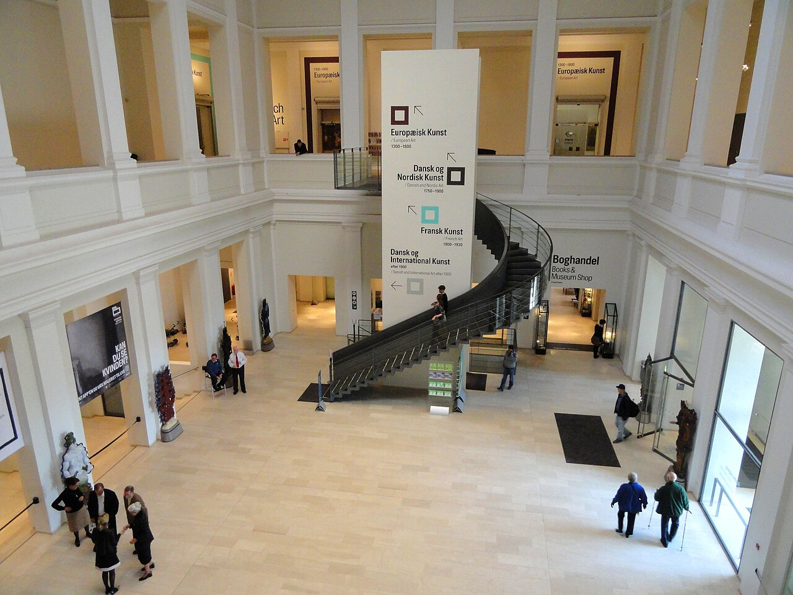
Nuotrauka: Daderot, CC0, šaltinis📍 Google Maps
Pietūs – Torvehallerne (Hallernes Smørrebrød)
Geriausia maisto turgavietė mieste – rekomenduojamas Hallernes Smørrebrød prekystalis tradiciniam smørrebrød. Įėjimas nemokamas, vidutinė kaina ~16 €/asm.
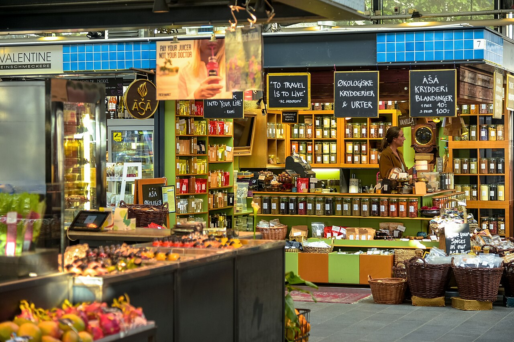
Nuotrauka: Jorge Franganillo, CC BY 2.0, šaltinis📍 Google Maps
Christiansborg Slot
Danijos parlamento būstinė, karališkosios reprezentacinės salės ir pilies griuvėsiai. Kasdien 10:00–17:00. Bilietas ~215 DKK internetu / 225 DKK vietoje, nemokamai <18 m.
 Nuotrauka: Moahim, CC BY-SA 4.0, šaltinis
Nuotrauka: Moahim, CC BY-SA 4.0, šaltinis
📍 Google Maps
Nationalmuseet
Didžiausias Danijos muziejus, vikingų ir priešistorės kolekcijos. Dirba kasdien 10:00–17:00. Bilietas ~150 DKK – patikrinkite prie kasos, kai kurie šaltiniai teigia, kad nuolatinė ekspozicija nemokama.
 Nuotrauka: Dietmar Rabich, CC BY-SA 4.0, šaltinis
Nuotrauka: Dietmar Rabich, CC BY-SA 4.0, šaltinis
📍 Google Maps
Vakarienė – Restaurant Kanalen
Aukštai vertinamas tradicinis danų-prancūziškas restoranas (Michelin Plate) tiesiai prie Christianshavn kanalo, netoli nakvynės vietos. Vakarienė ~65 € asmeniui.
📍 Google Maps🌤 Oras: dulksna, 10,4–12,0 °C, vėjas iki ~31 km/val. — diena praeina daugiausia patalpose, tad lietus netrukdys.
📅 3 diena, 2026-10-25 — Christiania, Tivoli ir Deep Purple koncertas
⛈ Prognozuojamas smarkus lietus (87%) ir stiprus vėjas iki ~59 km/val. — rekomenduojame rinktis Planą B žemiau.
Freetown Christiania
Savivaldi alternatyvi bendruomenė, gatvės menas. Lankykite tik dienos metu. Pusher Street – nefotografuokite, laikykitės taisyklių. Nemokama.
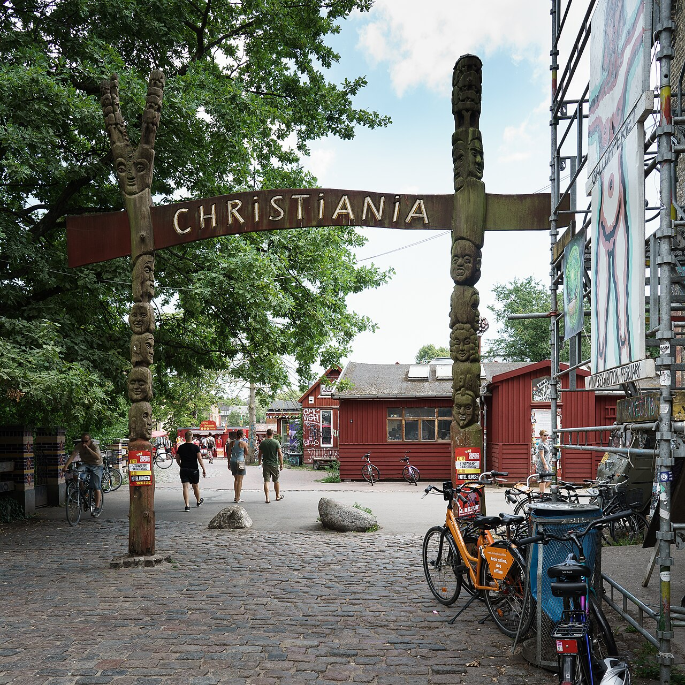
Nuotrauka: Neptuul, CC BY-SA 4.0, šaltinis📍 Google Maps
Ny Carlsberg Glyptotek
Antikos ir impresionistų kolekcija, žiemos sodas po stiklo kupolu. Sekmadienį dirba 10:00–17:00. Bilietas ~125 DKK.
Nuotrauka: Richard Mortel, CC BY 2.0, šaltinis📍 Google Maps
Pietūs – Tivoli Food Hall
Įvairiausių danų greito maisto prekystalių rinkinys – praktiška pietų pertrauka. Rekomenduojamas klasikinis danų dešrainis su traškiais svogūnais. Vidutinė kaina ~16 €/asm.
📍 Google MapsTivoli Gardens (Helovino tema)
Istorinis pramogų parkas, per visą kelionę vyksta Helovino sezonas su 20 000 moliūgų dekoracijų. Vartai 11:00–23:00. Bilietas ~200 DKK suaugusiam.
 Nuotrauka: Jakub Hałun, CC BY-SA 4.0, šaltinis
Nuotrauka: Jakub Hałun, CC BY-SA 4.0, šaltinis
📍 Google Maps
Vakarienė – Field's
Didelis prekybos centras su maisto kiemeliu prie pat arenos – patogu prieš koncertą. Rekomenduojamas burgeris (Sunset Boulevard, danų tinklas). Vakarienė ~16 € asmeniui.
📍 Google MapsRoyal Arena – Deep Purple koncertas
🎉 Deep Purple, Royal Arena — durys atsidaro ~18:00, koncerto pradžia orientaciniai ~19:00–20:00 (patikslinti artimiau datai). Šią naktį (spalio 24→25) Danijoje baigiasi vasaros laikas – laikrodžiai pasukami 1 val. atgal, patikrinkite, ar telefonas laiką pakeičia automatiškai, ir vėlyvo metro tvarkaraštį grįžtant.
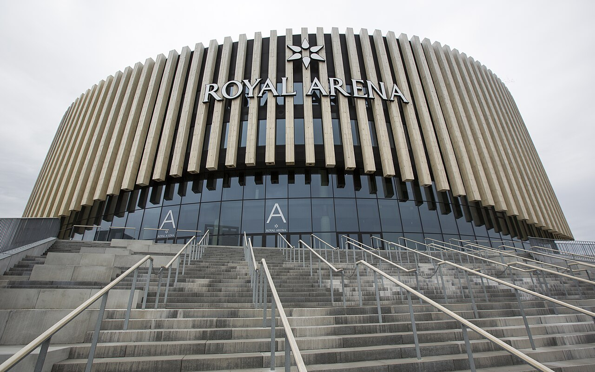
Nuotrauka: Jenny Andersson / News Oresund, CC BY 2.0, šaltinis📍 Google Maps
Grįžimas į apartamentus
Po koncerto grįžtama tiesioginiu metro. Patikrinkite paskutinio traukinio laiką.
📍 Google Maps🌤 Oras: lietus, 9,1–12,4 °C, vėjas iki ~59 km/val. — labai vėjuota ir lietinga diena.
🌧 Planas B (jei blogas oras)
Kodėl: Freetown Christiania pasivaikščiojimas ir Tivoli sodų lankymas – abu lauke, o šią dieną numatomas smarkus lietus (~12 mm) ir vėjo gūsiai iki 59 km/val., kai atrakcionai ir lauko takai gali būti uždaryti ar nesaugūs.
Lietinga diena viduje – muziejai, planetariumas ir Deep Purple koncertas
🚶 Pėsčiomis 1 🚇 Viešuoju transportu 1 🚶 Pėsčiomis 2 🚇 Viešuoju transportu 2Freetown Christiania (trumpas vizitas)
Dėl numatomo stipraus vėjo ir liūčių šįkart trumpas pasivaikščiojimas tik pagrindine gatve.
📍 Google MapsThorvaldsens Museum
Danų skulptoriaus Bertel Thorvaldsen kūrinių muziejus prie Christiansborg pilies, visas viduje.
📍 Google MapsNy Carlsberg Glyptotek
Antikos ir impresionistų kolekcija, žiemos sodas po stiklo kupolu.
📍 Google MapsPietūs – Café Glyptotek (žiemos sodas)
Pietūs tiesiai muziejaus stiklo kupolo žiemos sode tarp palmių – jauki vieta per lietų.
📍 Google MapsTycho Brahe Planetarium
IMAX kupolo filmai ir astronomijos ekspozicija – idealu lietingai popietei.
📍 Google MapsRoyal Arena – Deep Purple koncertas
Durys atsidaro ~18:00. Vidaus renginys, nepriklauso nuo oro.
📍 Google MapsGrįžimas į apartamentus
Diena baigiasi toje pačioje vietoje, kaip ir pagrindiniame plane.
📍 Google MapsPatarimas: Royal Arena koncertas ir kelionė iki jo nesikeičia – tai vidaus renginys, nepriklausantis nuo oro; į Ørestad patogiausia važiuoti S-tog traukiniu nuo København H.
📅 4 diena, 2026-10-26 — Amalienborg, Nyhavn ir skrydis namo
Amalienborg Museum
Kaip nuvykti: 🚇 Metro M1/M2: Christianshavn → Kongens Nytorv (~4 min), toliau 8 min pėsčiomis.
Karališkųjų apartamentų interjerai. Prieš lapkričio 1 d. pirmadieniais dirba 10:00–15:00. Bilietas ~125 DKK internetu / 135 DKK vietoje, nemokamai <18 m.
📍 Google MapsNyhavn (paskutinis apsilankymas)
Trumpas laikas suvenyrams ir paskutinėms nuotraukoms prie kanalo.
📍 Google MapsApartamentai – bagažas ir išsiregistravimas
Atsiimkite bagažą ir išsiregistruokite.
📍 Google MapsKopenhagos oro uostas (CPH) – pietūs ir skrydis
Grįžtamasis skrydis CPH→KUN išvyksta 15:15. Pietus patogu užkąsti pačiame oro uoste (Aamanns Deli & Take Away — smørrebrodas prieš skrydį, ~14 €/asm.). Rekomenduojama iš anksto atlikti registraciją internetu, liks pakankamai laiko bagažo pridavimui ir saugumo patikrai.
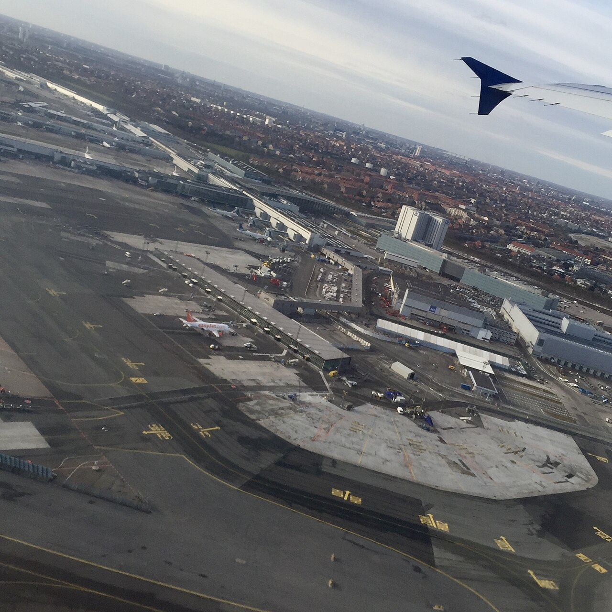
Nuotrauka: Ank Kumar, CC BY-SA 4.0, šaltinis📍 Google Maps
🌤 Oras Kaune grįžimo dieną: dulksna, 8,4–12,1 °C, lietaus tikimybė tik 31% — žymiai ramiau nei Kopenhagoje.
🗺️ Žemėlapis
🍽 Kur pavalgyti
1 diena
Christianshavns Bådudlejning og Café
Pietų stotelė maršrute, 2 min nuo Vor Frelsers Kirke · kanalo kavinė valčių nuomos punkte · vidutinė kaina ~20 €/asm. · Vakarienė ~28 € asmeniui.
Veikia nuo 1905 m., jauki kavinė tiesiai ant kanalo su valčių nuoma – gera vieta atsipūsti po bokšto lipimo Vor Frelsers Kirke.
📍 Google MapsKą paragauti čia


Nyhavns Færgekro
Vakarienės stotelė Nyhavn vakare · tradicinė danų krogė (taverna) · vidutinė kaina ~28 €/asm. · Vakarienė ~38 € asmeniui.
Vienas geriausių kainos/kokybės santykių Nyhavn kanalo pakrantėje – garsus savo silkių bufetu ir terasa prie vandens saulėlydžio metu.
📍 Google MapsKą paragauti čia

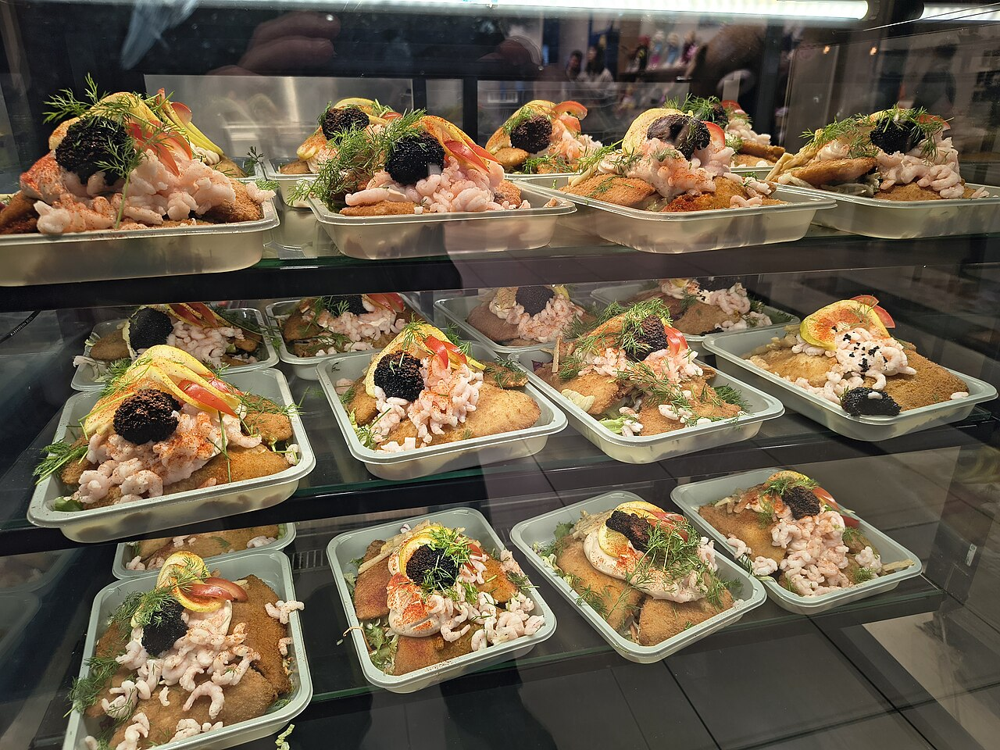
2 diena
Hallernes Smørrebrød (Torvehallerne)
Pietų stotelė Torvehallerne turgavietėje · turgavietės smørrebrodo prekystalis · vidutinė kaina ~16 €/asm. · Vakarienė ~22 € asmeniui.
Geriausios reputacijos smørrebrodo prekystalis mieste, tiesiai turgavietėje tarp šviežios žuvies ir sūrių prekystalių.
📍 Google MapsKą paragauti čia
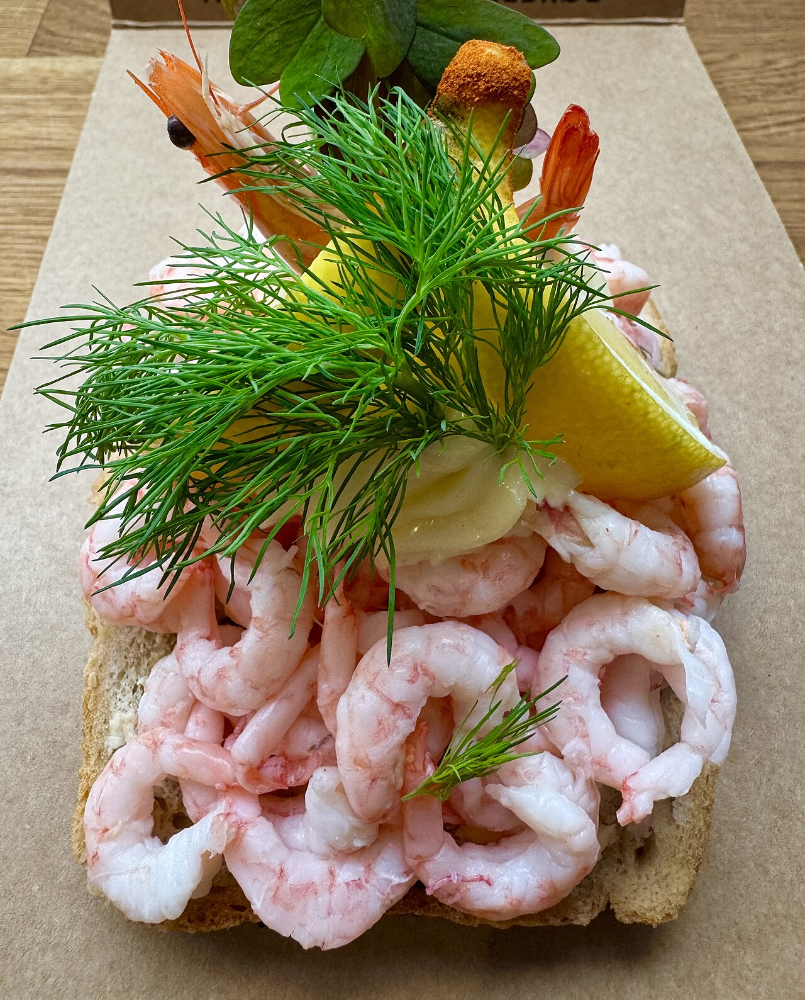
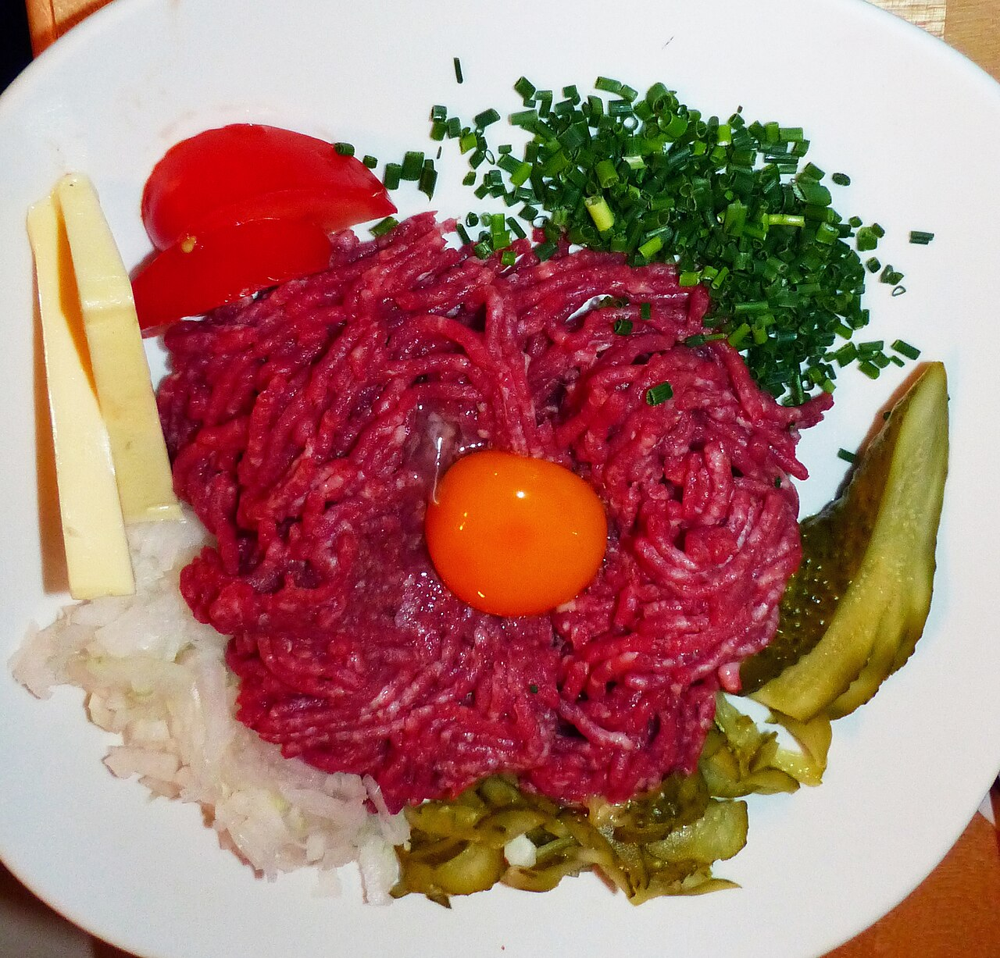

Restaurant Kanalen
Vakarienės stotelė Ved Kanalen, 5 min nuo nakvynės Christianshavn · aukštesnės klasės danų-prancūziška virtuvė (Michelin Plate) · vidutinė kaina ~55 €/asm. · Vakarienė ~65 € asmeniui.
Michelin gide pažymėtas restoranas tiesiai ant Christianshavn kanalo kranto – atmosfera atpalaiduojanti, be snobizmo, nepaisant apdovanojimo.
📍 Google MapsKą paragauti čia
3 diena
Tivoli Food Hall
Pietų stotelė prieš Tivoli Gardens · maisto salė su 15–20 prekystalių · vidutinė kaina ~16 €/asm. · Vakarienė ~20 € asmeniui.
Įvairiausių danų greito maisto prekystalių rinkinys viename stoge – praktiška pietų pertrauka tarp Christiania ir Tivoli.
📍 Google MapsKą paragauti čia
Field's
Vakarienės stotelė prieš Royal Arena koncertą · prekybos centro maisto kiemelis · vidutinė kaina ~14 €/asm. · Vakarienė ~16 € asmeniui.
Ne tradicinė virtuvė, bet greitas ir patikimas pasirinkimas prieš koncertą – daug prekystalių vos prie pat arenos.
📍 Google MapsKą paragauti čia
4 diena
Aamanns Deli & Take Away (CPH oro uostas)
Pietų ir laukimo laikas prieš skrydį CPH→KUN · smørrebrodo parduotuvė oro uoste · vidutinė kaina ~14 €/asm. · Vakarienė ~18 € asmeniui.
Geriausiai vertinama tradicinio smørrebrodo vieta oro uoste – paskutinė galimybė paragauti danų virtuvės prieš skrydį namo.
📍 Google MapsKą paragauti čia
🍸 Barai
Hviids Vinstue
Netoli Kongens Nytorv / Nyhavn, gerai tinka po 1 dienos vakarienės.
Kopenhagos seniausias nenutrūkstamai veikiantis baras, įkurtas 1723 m. – tamsaus medžio interjeras, žvakės ir senųjų menininkų portretai, matęs didžiuosius miesto gaisrus ir du pasaulinius karus.
📍 Google Maps🍴 Ką paragauti
Atviras ruginės duonos sumuštinis su įvairiais priedais (silke, kiauliena, krevetėmis, kiaušiniu) – danų kasdienio maisto pagrindas.
Kur ragauti: Christianshavns Bådudlejning og Café, Nyhavns Færgekro, Hallernes Smørrebrød, Tivoli Food Hall, Aamanns Deli & Take Away.Kritzolina, CC BY-SA 4.0
Marinuota silkė ant ruginės duonos, dažnai keliomis padažų versijomis – klasikinis danų užkandis prie akvavito.
Kur ragauti: Nyhavns Færgekro, Aamanns Deli & Take Away.cyclonebill, CC BY-SA 2.0
Šventinis smørrebrodas su kepta ir virta žuvimis, krevetėmis, majonezu ir ikrais.
Kur ragauti: Hallernes Smørrebrød, Nyhavns Færgekro.RhinoMind, CC BY-SA 4.0

Kiaulienos ir jautienos maltinukai su ruginę duona ir raudonaisiais kopūstais ar bulvėmis – namų virtuvės klasika.
Kur ragauti: Nyhavns Færgekro, Restaurant Kanalen.cyclonebill, CC BY-SA 2.0
Keptas kiaulienos sprandinė su traškia odele, raudonaisiais kopūstais ir bulvėmis – tradicinis šventinis patiekalas.
Kur ragauti: Hallernes Smørrebrød, Nyhavns Færgekro.fru_green, CC BY-SA 2.0
Apvalūs, pūsti blyneliai iš specialios keptuvės, patiekiami su uogiene ir cukraus pudra – populiarūs rudenį.
Kur ragauti: Christianshavns Bådudlejning og Café, Tivoli Food Hall.JoachimK, Public domain
Keptas dešrainis su traškiais svogūnais, raugintais agurkais, garstyčiomis ir remulado padažu – gatvės maisto klasika.
Kur ragauti: Tivoli Food Hall, Field's.

Sluoksniuotos tešlos pyragaitis su cinamonu ar vaisių įdaru – rytinis ar popietinis skanėstas su kava.
Kur ragauti: Tivoli Food Hall, Aamanns Deli & Take Away.Peter Isotalo, CC BY-SA 3.0
💰 Biudžeto suvestinė
Skaičiuota 4 keliautojams, 4 dienoms / 3 naktims, be automobilio nuomos.
| Kategorija | Min | Tikėtina | Max |
|---|---|---|---|
| Skrydžiai (KUN ⇄ CPH, Ryanair) | 499 € | 499 € | 499 € |
| Viešasis transportas (City Pass) | 118 € | 150 € | 188 € |
| Apgyvendinimas (3 naktys) | 405 € | 420 € | 450 € |
| Maistas | 836 € | 876 € | 1 050 € |
| Bilietai į objektus ir koncertas | 898 € | 963 € | 1 011 € |
| Iš viso (4 keliautojai) | ~2 756 € | ~2 908 € | ~3 198 € |
| Vienam asmeniui | ~689 € | ~727 € | ~800 € |
Didžiausios neapibrėžtys: apgyvendinimo kaina konkrečioms datoms, Deep Purple bilieto kategorija (skirtumas iki ~23 €/asm.) ir faktinės maisto/gėrimų išlaidos restoranuose.
ℹ️ Praktinė informacija
- Dokumentai: galiojantis pasas arba asmens tapatybės kortelė – Danija yra Šengeno zonoje, ES piliečiams viza nereikalinga iki 90 dienų.
- Valiuta: Danijos kronos (DKK) – Danija ES narė, bet euro zonoje nedalyvauja. Kortelės priimamos beveik visur, tačiau grynųjų verta turėti Christianijoje (bankomatų mažai) ir mažose užeigose.
- Arbatpinigiai: neprivalomi – paslauga įskaičiuota į sąskaitas. Galima apvalinti arba palikti ~10% už puikų aptarnavimą.
- Sveikata: pasiimkite Europos sveikatos draudimo kortelę (EHIC) – nemokamas ar sumažintos kainos skubios pagalbos gydymas ES piliečiams.
- Pagalbos numeris: 112 (policija, gaisrinė, greitoji, skambutis nemokamas). Neskubios medicininės konsultacijos linija: 1813.
- Viešojo transporto bilietai: Rejsebillet programėlė (keičia DOT Billetter) arba City Pass (zonos 1–4, neriboti 24/48/72 val. bilietai).
- Papročiai: danai vertina punktualumą ir asmeninę erdvę, "hygge" kultūra yra neformali. Dviračių takai (cykelsti) – rimtas dalykas, niekada jais neikite pėsčiomis.
- Saugumas: Kopenhaga yra labai saugi, bet saugokite daiktus turistų gausiose Nyhavn/Strøget vietose. Christiania saugi dienos metu, vakare venkite, Pusher Street – nefotografuokite.
🌦 Orų prognozė
Dulksna, vėjas iki 25 km/val., lietaus tikimybė 82%
Dulksna, vėjas iki 31 km/val., lietaus tikimybė 78%
Lietus, stiprus vėjas iki 59 km/val., lietaus tikimybė 87%
Dulksna, vėjas iki 29 km/val., lietaus tikimybė 31%
Prognozė parengta 2026-10-21 – ji dar gali šiek tiek keistis artėjant kelionei.
🧭 Praktinė informacija kelionei
Skrydžiai: KUN → CPH, atvykimas 2026-10-23 09:40 · CPH → KUN, išvykimas 2026-10-26 15:15.
Kontaktai: Buto savininkas/valdytojas: ______ · Grupės kontaktinis asmuo: ______
Pastaba: spalio 25-osios naktį Danijoje baigiasi vasaros laikas – laikrodžiai pasukami 1 val. atgal.
🧳 Ką pasiimti
- Visi skysčiai (šampūnas, dezodorantas, pasta) – iki 100 ml talpyklose, sudėti į vieną permatomą 1 l maišelį rankiniame bagaže.
- Vietoj skėčio rinktis tvirtą striukę su gobtuvu – spalio 25 d. prognozuojamas vėjas iki 59 km/h sugadins skėtį.
- Rengtis sluoksniais: lauke 8-12°C ir lietinga, bet muziejuose/pilyse (Rosenborg, Christiansborg, SMK) šilta – lengva nusivilkti viršutinį sluoksnį.
- Christianshavn ir Nyhavn turi akmenų grindinį – rinktis patogius, ne slidžius batų padus.
- Spalio 25-osios naktį Danijoje baigiasi vasaros laikas (laikrodžiai -1 val.) – naudinga patikrinti telefono laiką automatiškai atsinaujina.
- Danijos elektros lizdai sutampa su Lietuvos (Europlug/Type C,E tinka) – adapteris nereikalingas.